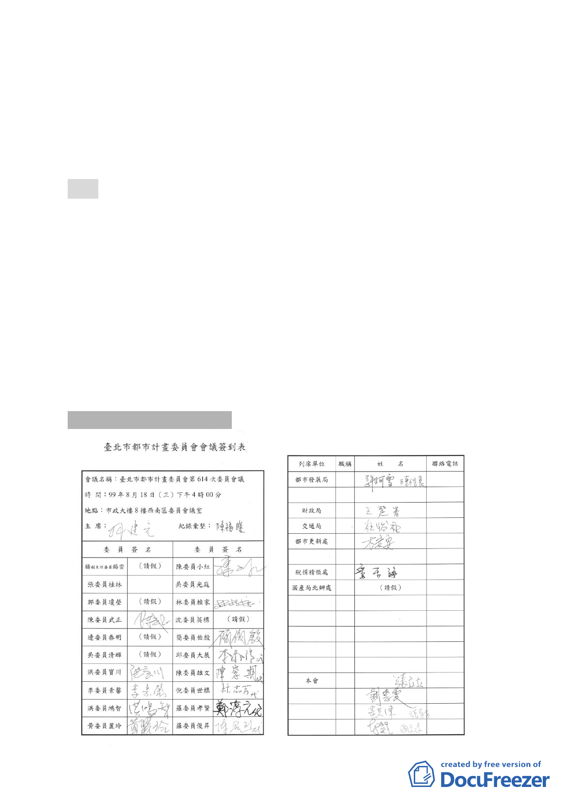

五、辦理單位：臺北市政府。
六、法令依據：都市計畫法第 66 條、都市更新條例第 5 條、第 6
條、第 8 條、第 11 條及臺北市都市更新自治條例第 15 條。
七、本更新單元劃定業經市府審查符合「臺北市都市更新自治條
例」劃定基準及環境評估標準（詳計畫書第 12、13 頁）。
決議：
一、本案變更更新單元劃定範圍原則同意，惟計畫公告前仍應完
成下列事項（一）請申請單位採雙掛號方式，告知本次遭剔
除於更新單元範圍之權利關係人有關經剔除後之權益變更與
調整（如土地使用之加級等）。（二）前項之權益變更與調整
情形，請市府都市更新處協助申請單位擇期於當地召開說明
會，明確告知相關之權利關係人。
二、本案比照討論事項十二之處理方式，於本次會議紀錄宣讀確
認前，如有其他權利關係人提出異議，則須再提報本會討論。
陸、散會（18 時 15 分）
- 15 -